See who's exposed to what
In DeFi, a vault leans on markets, and markets lean on assets. I designed and built a map of that whole chain, so risk teams can read who's exposed to what in seconds instead of hours. Shipped with two engineers and AI agents in the loop.
Request access to try it live
Vault Intelligence is an internal tool. Ask me for a link and test it for real.
Request access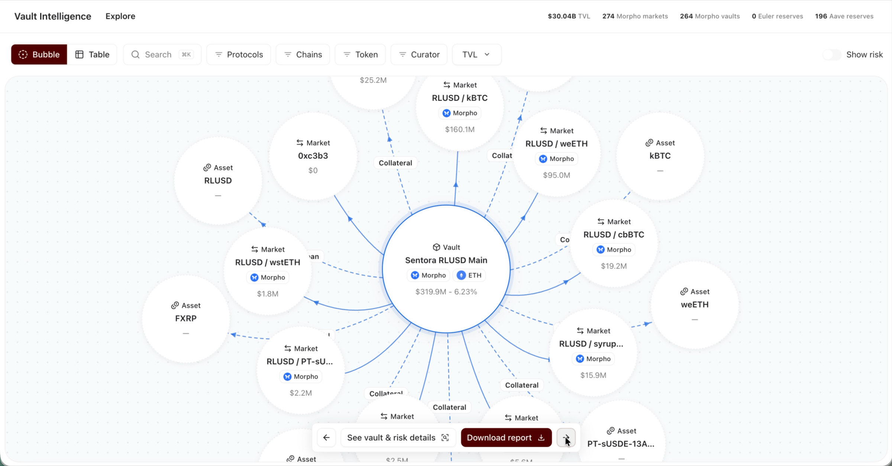
Overview
Challenge: contagion is invisible
A vault shows a clean number and a friendly name. It never shows the stack underneath: the markets it lends into, the collateral behind them, the asset three layers down that other vaults lean on too. When that asset breaks, they break together.
"When one asset wobbles, which vaults go down with it?"
Answering that meant hours of manual digging across a dozen disconnected tools.
Approach: three kinds of things, two directions
I mapped the whole chain and made it readable both ways. The same market or asset is shared by many vaults at once, and that sharing is how risk spreads.
- Vault: where money is deposited.
- Market: where it's lent.
- Asset: what backs it, and what you're ultimately exposed to.
- Read it downstream to see what a vault actually holds; read it upstream to see who's exposed to a given asset.
Research
I didn't have the luxury of a research phase before building, so I made research continuous. I shipped an internal V0 early, then ran short feedback and QA sessions with the people using it, and read through partner calls where the platform was demoed. Every session was recorded with Granola, and I used AI to synthesise across meetings, so patterns came out of a dozen conversations instead of my memory of the last one.
Who I learned from
- Internal users: 1:1 feedback syncs with our risk lead, two QA sessions with risk and engineering on the vault and asset reports, and an All-Hands demo to the whole company.
- Go-to-market: weekly syncs with marketing on how the product should be named and entered.
- Partners (via BD calls): five institutional conversations, including a European exchange, a TradFi investor, an enterprise custody provider, a wallet infrastructure company and a regulated custodian.
From conversation to ticket
Feedback never stayed in a meeting note. I scoped the project in Linear from day one (map, table, vault page, PDF report, comparison, plus the PRD), and every round of feedback came back as tracked issues, written as the problem the user hit rather than the fix.
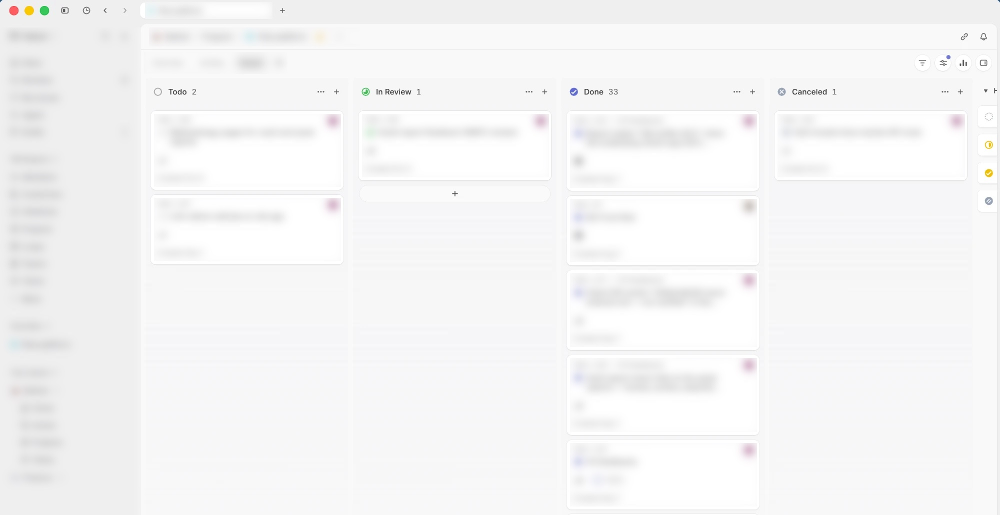
Product
Select anything to see who leans on it
A vault shows what it holds, an asset shows who's exposed to it, a market shows both. I designed the gesture as four states, so the map never changes more than the question you just asked.
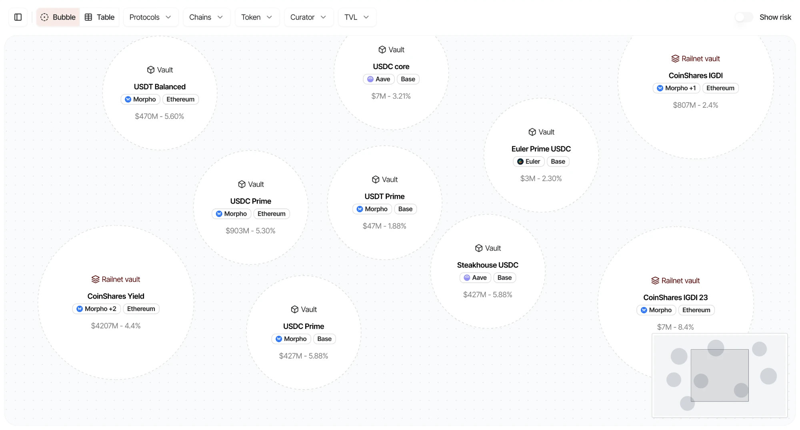
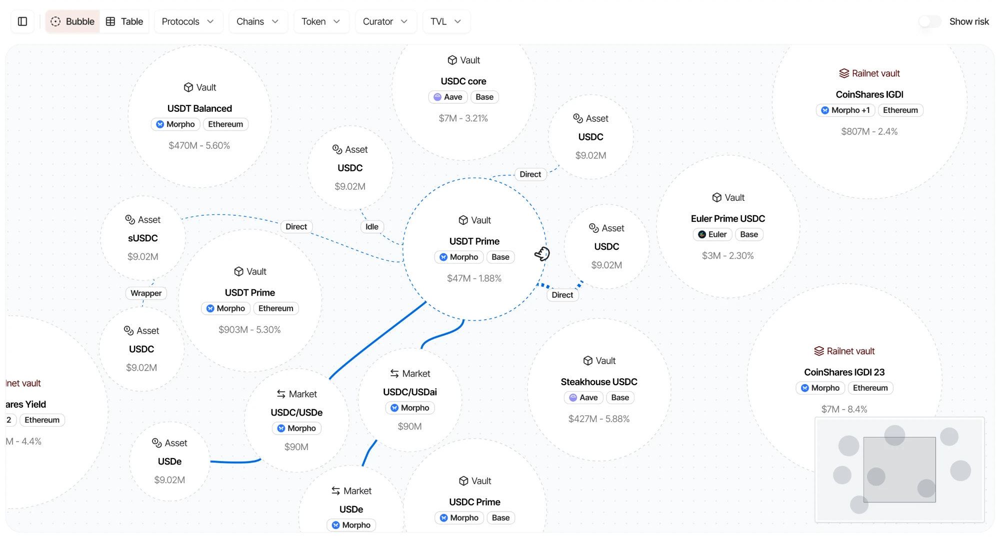
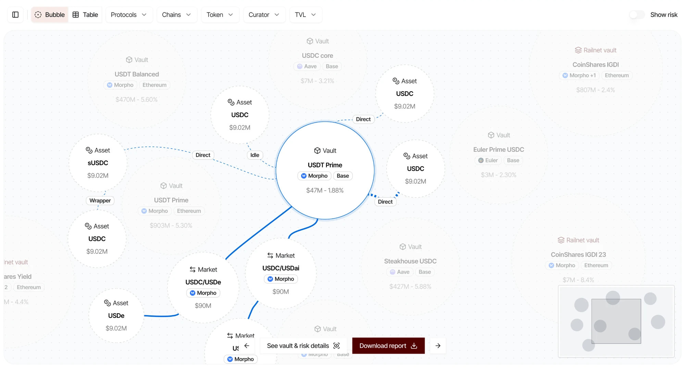
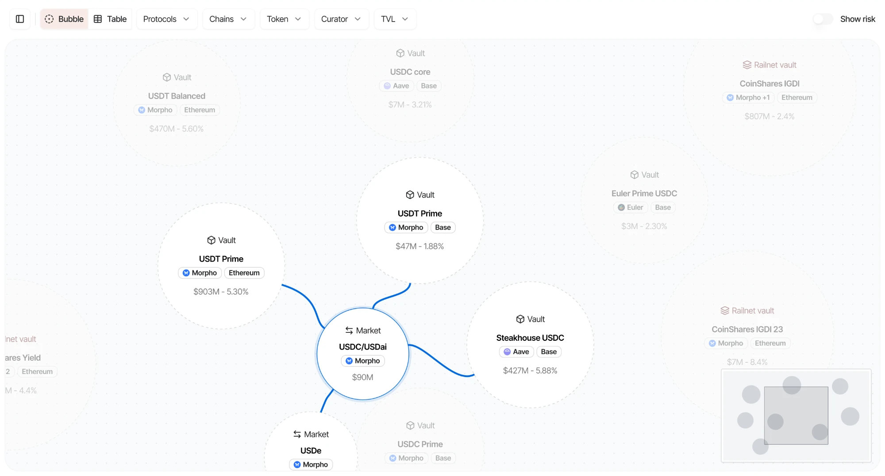
Key decisions
Each decision went through the same loop. We first explored the directions on paper, iterating fast on sketches. Then we coded the most promising ones so users could test them in the real product, with real data, before we committed.
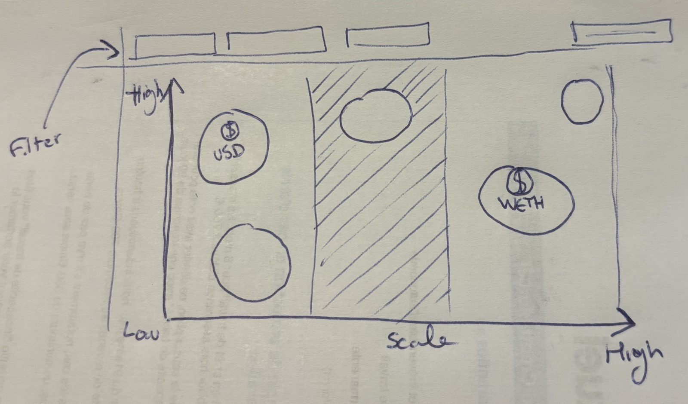
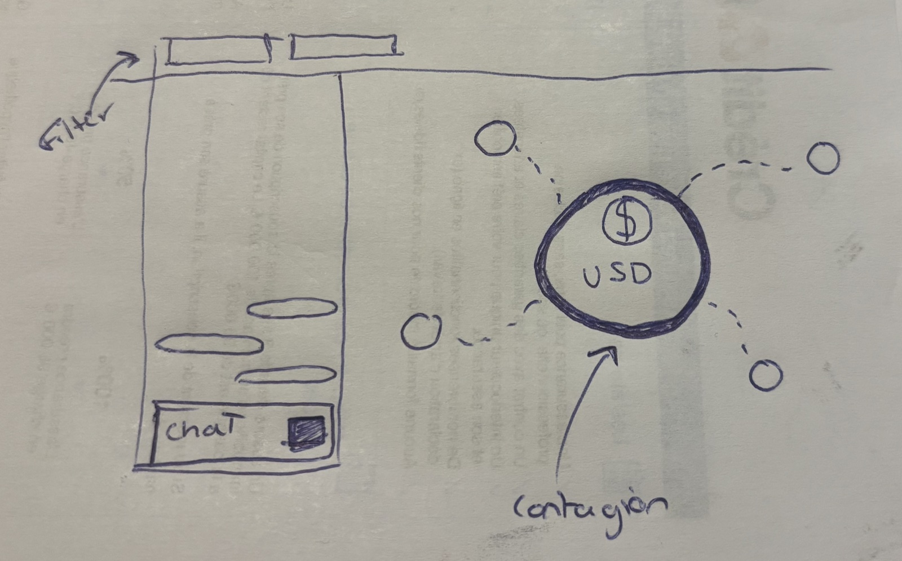
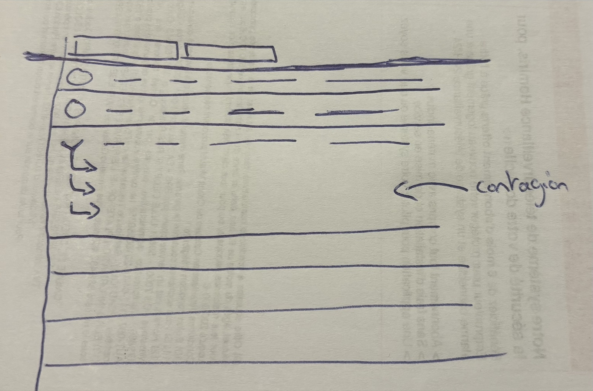
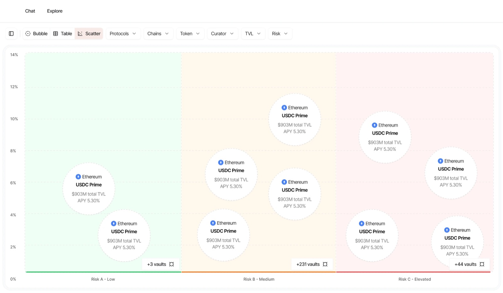
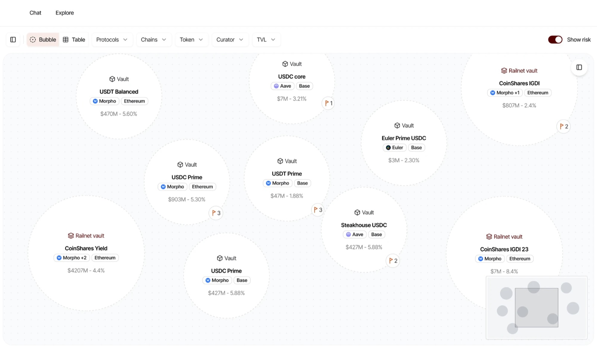
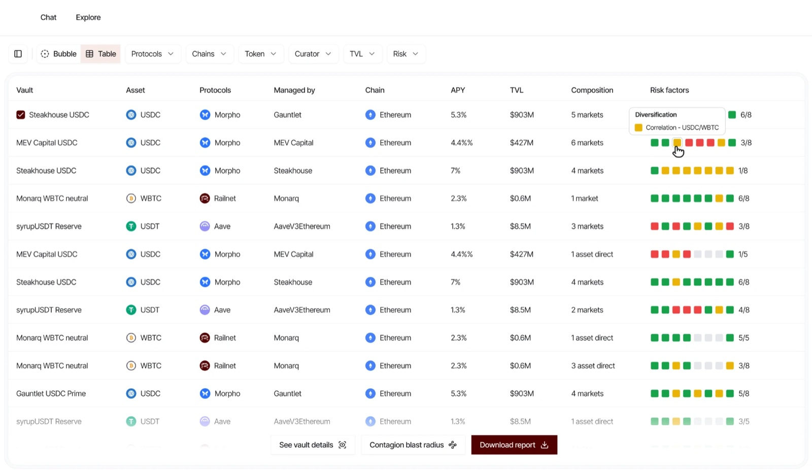
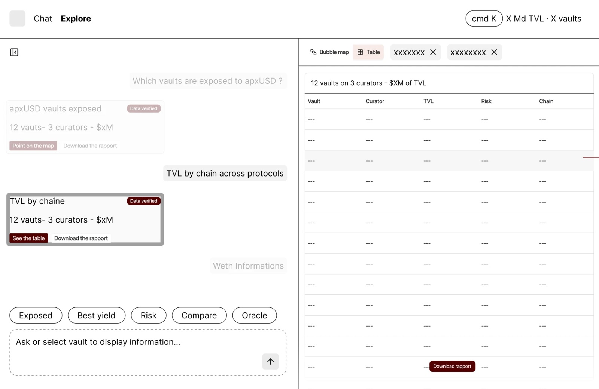
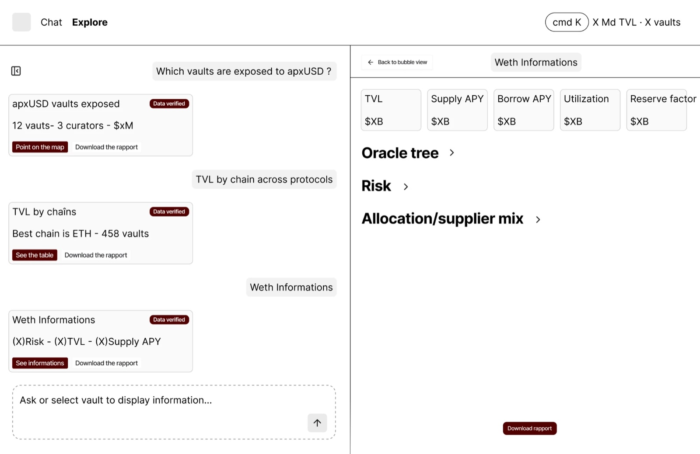
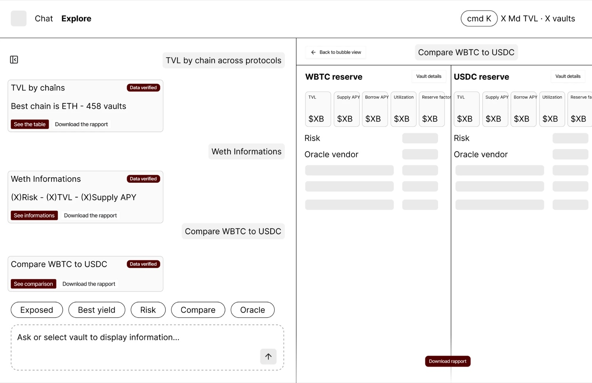
Two views, one question
The product has a map and a table, and they're not competing: each answers the same question at a different density. The decision was which one leads. A table can list one vault's holdings, but only a graph shows that four vaults lean on the same asset at once. So the map comes first, and the table takes over when you need numbers.
- Map, to spot patterns: force-directed, so shared dependencies pull nodes together and contagion becomes visible.
- Table, to compare: same filters, same grammar, one figure per column. It takes over when the biggest vaults get too dense for a graph.
How I built it: AI-native
On the AI side, I mainly used two tools: Claude Code to build features and iterate on the app directly in code, and Granola to record and synthesise every feedback session. What made that speed safe was the design system: every component lives in Figma and in code, and AI builds from those components instead of inventing UI. My job shifted from drawing every state to defining the system and judging the output.
- Fast: V0 shipped internally in about two weeks, then 220+ pull requests merged in eight.
- On-brand by default: every generated screen is assembled from system components.
- Feedback to production in days: each round of feedback became shipped changes the same week.
- No ticket for small things: I set up Claude in Slack to open pull requests for quick fixes, so small changes skip the ticket queue entirely.
- Built for agents too: the same data is exposed through an MCP server, so you can ask Claude to "compare the top five USDe vaults" and get a report built from the platform.
Outcomes & takeaways
Who's exposed, in under a minute
Kiln's risk, BD and partnerships teams use it. When a token starts depegging, "which vaults are exposed?" is one search, and you leave with a report you can forward to a client.
Agent-ready: AI assistants query the same facts people see.
Coverage is live product data; time comparisons are directional estimates against the manual workflow they replaced.